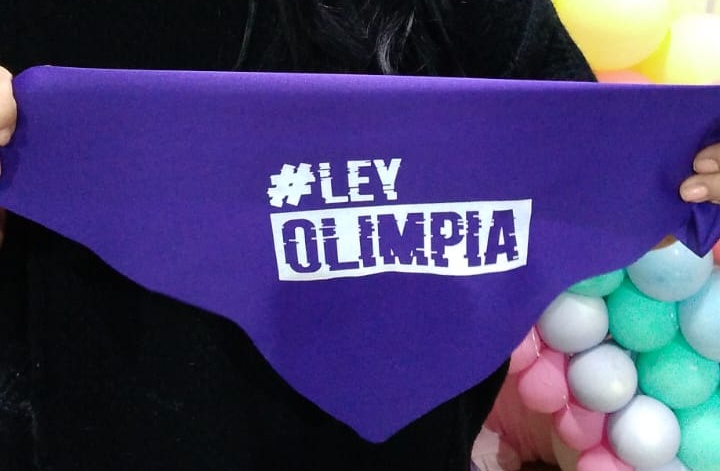
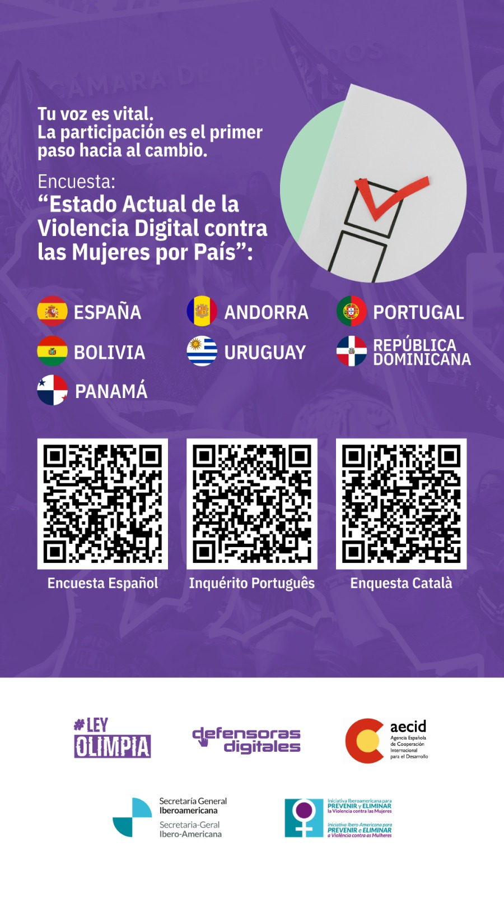
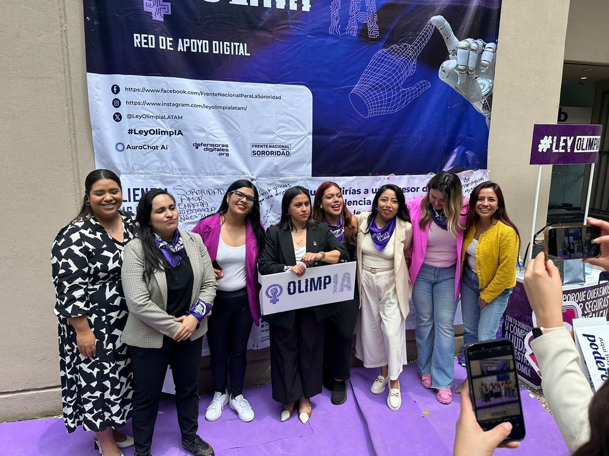

Nosotras
La Ley Olimpia es un movimiento político de mujeres sobrevivientes de violencia digital y aliadas, que nos unimos para hablarle al mundo desde nuestros territorios, nuestras voces y nuestras historias personales. Este rumbo nos ha llevado a adoptar como base teórica el feminismo y a convertirnos en Defensoras Digitales, para que la justicia que no fue para nosotras sea para las demás.
Ley Olimpia representa para nosotras la reivindicación de nuestros cuerpos y nuestros nombres, que fueron expuestos y violentados en Internet. Representa la cooperación colectiva entre víctimas, sobrevivientes, defensoras de derechos humanos, feministas, amigas, compañeras, familias y cualquier actor público o privado que quiera caminar junto a nosotras para tratar de erradicar la violencia digital.
Por lo tanto, es también resultado de una causa colectiva que ha ido de nuestro dolor a la resistencia, de nuestras historias a las conciencias, de las redes a las calles, de los territorios a los congresos, del corazón a las leyes… Todo lo ha hecho posible el amor, porque encontramos aquí un espacio para sanar y participar juntas con la alegría que intentaron arrebatarnos cuando nos decían que lo que hacíamos no tenía sentido porque lo virtual no era real.
Nuestros principales ejes de acción
- Atención integral a víctimas de violencia digital.
- Producción de conocimiento: informes, publicaciones, materiales e investigaciones.
- Incidencia pública a través del diseño de políticas públicas, protocolos, programas educativos, conferencias, talleres y capacitaciones sobre violencia digital.

Encuesta regional
Ayúdanos a conocer tu experiencia sobre violencia digital
Tu participación es importante para fortalecer el diagnóstico, la prevención y la atención de la violencia digital en América Latina.

Ley Olimpia
La “Ley Olimpia” se refiere a un conjunto de reformas legislativas encaminadas a reconocer la violencia digital y sancionar los delitos que violen la intimidad sexual de las personas a través de medios digitales.
Tipifica delitos que atentan contra la intimidad sexual
- Videograbar, audiograbar, fotografiar o elaborar videos reales o simulados (IA) de contenido sexual íntimo, de una persona sin su consentimiento o mediante engaño.
- Exponer, distribuir, difundir, exhibir, reproducir, transmitir, comercializar, ofertar, intercambiar y compartir imágenes, audios o videos de contenido sexual íntimo de una persona, a sabiendas de que no existe consentimiento, mediante materiales impresos, correo electrónico, mensajes telefónicos, redes sociales o cualquier medio tecnológico.
“Aquellas acciones en las que se expongan, difundan o reproduzcan imágenes, audios o videos de contenido sexual íntimo de una persona sin su consentimiento, a través de medios tecnológicos y que por su naturaleza atentan contra la integridad, la dignidad y la vida privada de las personas causando daño psicológico, económico o sexual tanto en el ámbito privado como en el público, además de daño moral, tanto a ellas como a sus familias.”
La Ley Olimpia LATAM parte de un enfoque feminista, de derechos humanos y de soberanía digital. Su objetivo es construir entornos digitales libres de violencia, basados en la cooperación entre países y actores sociales.
- Perspectiva de género.
- Garantía de derechos humanos.
- Enfoque regional e interseccional.
- Acceso a la justicia y reparación integral.
Más allá de los efectos directos que implican las reformas: más de 1000 acciones documentadas por parte de instituciones como las secretarías de seguridad pública a través de sus policías cibernéticas, universidades públicas, secretarías e institutos de las mujeres, fiscalías y procuradurías de justicia; la Ley Olimpia en su momento colocó un tema antes invisible en la agenda pública y lo llevó hasta las agendas de gobierno, consiguiendo que México fuera de los primeros países del mundo en tener legislación y políticas públicas para abordar la violencia digital de género contra las mujeres.
Creamos nuestro propio lenguaje y nos reconstruimos como sobrevivientes
Respecto al uso del lenguaje, un logro de la Ley Olimpia es que podemos decir que en México se dejó de usar hace años para nombrar institucionalmente a esta violencia el concepto “pornovenganza”, retomado del inglés “revenge-porn”, por ser revictimizante para las mujeres.
¡No es porno ni venganza, es violencia digital y no es nuestra culpa!
En México, además de tener más de 9000 carpetas iniciadas por difusión de contenido íntimo sexual sin consentimiento, tenemos el primer caso probablemente del mundo, de un agresor vinculado a proceso judicial por alterar la imagen de mujeres para desnudarlas con inteligencia artificial, gracias a la denuncia de las víctimas a través del tipo penal que se creó con las reformas de la Ley Olimpia.
¡No más grupos de packs y nudes donde violan nuestra intimidad!
En cuanto fue aprobada la Ley Olimpia por el poder legislativo, gracias a la cobertura mediática que atrajo la movilización social, muchos grupos dedicados exclusivamente al intercambio, compra y venta de packs y nudes anunciaron que cerraban, pasando a la clandestinidad.
No queremos solo una ley, sino un cambio de conciencias
Se crearon nuevas instituciones: se creó la Agencia Especializada en Delitos contra la Intimidad Sexual, un área especializada en la persecución de delitos sexuales a través de las tecnologías, única en el mundo.
Territorio
La primera vez que presentamos la Ley Olimpia en un Congreso fue en 2014, pero no fue hasta 2018 que conseguimos su aprobación en Puebla, México. Después, las Defensoras Digitales recorrimos estado por estado en México atendiendo víctimas y proponiendo la legislación en cada congreso, hasta que se consiguió su integración al Código Penal Federal en México en 2021, en Argentina en 2023 y en Panamá en 2024.
En el 2024 la ruta legislativa de Ley Olimpia inició en Colombia, Uruguay e integración a la legislación existente en Ecuador.
En diciembre de 2025, Ley Olimpia sentó las bases de la publicación de la Ley Modelo Interamericana para Prevenir, Sancionar y Erradicar la Violencia Digital contra las Mujeres por Razones de Género publicada por el Comité de Expertas del Mecanismo de Seguimiento de la Convención Belém do Pará (MESECVI) de la Organización de Estados Americanos (OEA).
En 2026, Ley Olimpia se presentó en Bolivia y Honduras.
Noticias
Avances regionales y noticias del movimiento. Consulta los boletines más recientes.

Movimiento Ley Olimpia participa en el Global Policy Dialogue en Bangkok, Tailandia
Implementación en Panamá

Impacto en México

Ruta en Ecuador

Proceso en Uruguay

Presentación en Bolivia

Iniciativa en Honduras
Informes
Consulta los materiales oficiales y recursos complementarios del movimiento Ley Olimpia LATAM.

Nota conceptual

VSD contra las mujeres en México

Violencia Digital (ESP e ING)

Informe 2024

Jornada de prevención
OlimpIA: tu red de apoyo digital 24/7
Ley OlimpIA: La primera Inteligencia Artificial desarrollada por las Defensoras Digitales en colaboración con AuraChat.Ai.
Ley OlimpIA es el primer algoritmo avanzado de inteligencia artificial creado por y para mujeres.
Esta red de apoyo digital 24/7 está diseñada para atender a víctimas de violencia digital, integrando cuatro ejes fundamentales de contención: psicoemocional, digital, legal y comunitaria.

Súmate contra la violencia digital
Construimos juntas una red regional para prevenir, atender, sancionar y erradicar la violencia digital contra las mujeres.